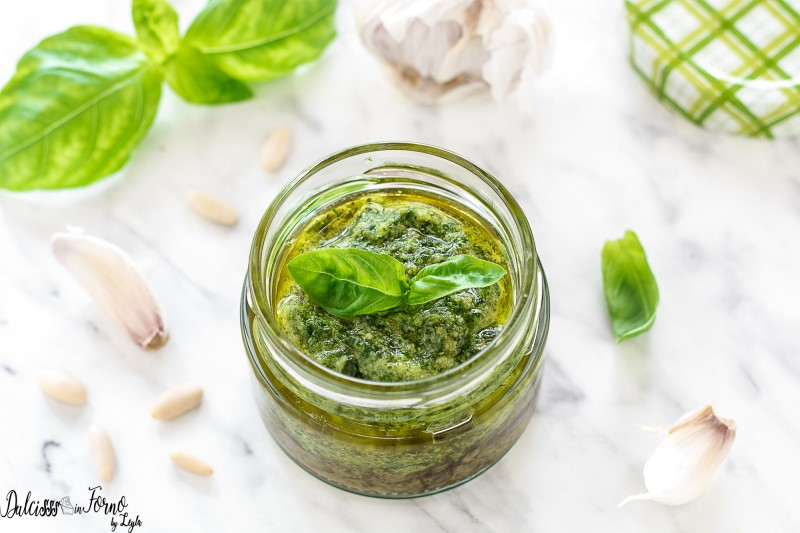

Pesto de Albahaca

Pesto
Un increible Pesto Tano
Ingredientes
- 50 g albahaca
- 50 g parmesano
- 20 g pecorino romano
- 15 g de fruto seco (rostisado levemente en el horno) a eleccion
- 100 g aceite de oliva extra virgen
- 1 diente de ajo
- sal gruesa
Pasos
- En una licuadora metemos la albahaca, los quesos, la sal y el fruto seco y el ajo sin el centro del mismo
- Agregamos aceite de oliva (la mitad o menos) preferentemente frio de haber estado en la heladera por unas horas
- Licuar intermitentemente, para que no se caliente demasiado la cuchilla (la cual podemos poner en la heladera antes de utilizar)
- Agregar el resto del aceite una vez lograda la consistencia querida
- Si se mezcla con la pasta, una vez cocinada la pasta se le agrega el pesto y mezcla en un Bowl fuera del fuego.